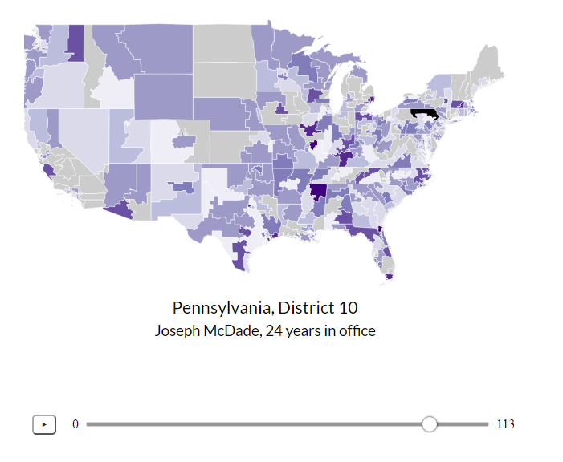

Digital Phase Locked Loop (DPLL)
For my final project in my Mixed Analog-Digital VLSI, I designed a digital phase locked loop IC using MOSFETs and a passive RC filter. This circuit can be used in a wireless communication system to ensure that the received data is clocked at the same rate as the transmitter's clock or can be used as a frequency synthesizer. The above image is the entire circuit, which consists of a phase frequency detector (PFD), a charge pump, a loop filter, a voltage-controlled oscillator (VCO), and a divide-by-n counter in a negative feedback loop, built in LT Spice. We simulated this circuit, synthesizing output clock signals in the range of a couple hundred kHz to 200 MHz. We then laid out the circuit in Glade, a free IC editor, shown below.
We sent out this design for fabrication from MOSIS and will be receiving and testing our IC sometime in February 2017. If you want to see our designs, please visit our project library.

We Do: Your Wedding Planning App

For my final project in my Human Factors in Design course, I built a web and mobile application for people who plan their own weddings. Users visit our web application and can either join a wedding planning party or create a new one. They then proceed through a configuration process which asks when they plan on getting married and on what days and times are they free to work on planning their wedding. Using this data, we create a schedule for the user and notify them with tasks to complete during the days and times they indicated.

In talking to people who were in the process of planning their own wedding or people who had just recently planned their wedding, we noticed that a vast majority of our user group did much of their organization on Excel or Google Sheets. In looking at other competitors in this space, we found users were presented with hundreds-of-items-long checklists that felt overwhelming and were too rigid and non-customizable.
Our solution provides a mobile notification interface for users to see only the tasks they have to do today or the next time that they are free to work on planning their own wedding. Users can now get planning done for their wedding while on the go. In addition, users can perform the same actions on our web interface while also providing higher-level configuration and customization options. For this project, we developed mockups of the mobile and web interfaces and iterated on them in the form of paper prototyping tests, formal usability studies, and heuristic evaluations.
If you want to learn more about our project or explore our mockups, please visit our website.
Catalyst Web App
For my final project in my Olin.js course, I built a web application for artists to display their work and credit their inspirations. Viewers would then be able to see a single piece of art, a tree of pieces that inspired the creation of this art, and other works that were inspired by this art. I primarily worked in the back-end for this project, developing our user, piece, and board schemas and the routes used to manipulate these objects. We used Node for our server, React for our client-side Javascript, MongoDB as our database, and D3 to render this tree, which is shown below.
The design of this web application was heavily influenced by Pinterest, with the idea being something along the lines of "Let's make Pinterest but you can show off what you made while showing what inspired you to make it in the first place". Users log in with Facebook and see a feed of all pieces uploaded to the site. Users can visualize the trees of inspired pieces and inspiration pieces, add pieces to their own boards, and upload their own work and credit pieces from their boards as inspirations. A user's board is shown below.
If you want to check out Catalyst for yourself, please visit our application. Our GitHub repository can be found here.
Congress Through Time
For my final project in my Data Science course, we gathered data on every session of the U.S. Congress from the 1st to the 113th and analyzed it in 4 visuals. We started out by scraping data from Congress.gov and Senate.gov but, after a bit of research, found GovTrack which is not affiliated with the U.S. government, provides its data for free, and has data from all session of Congress in JSON format.
The data from GovTrack came in the form of hundreds of gigs of individual JSON files for every bill, amendment, and vote in Congress. We spent the first half of this project organizing this data into indiviudal .csv files. We produced 226 CSV files, one for each branch of Congress for each of its 113 sessions. The 114th session of Congress was in term at the time of creation of this project, so we chose not to include it for incomplete data. The files are named [session][branch].csv where [session] is the session number, 1-113, and [branch] is the branch of Congress, either "house" or "senate". Additionally, we created a legislators.csv file which contains a row for each legislator and columns of information about them. We made all of our data licensed free and open source under the GNU General Public License and, in the spirit of data journalism, invite visitors to use the data as they see fit.
Having organized our data, we began creating visualizations using D3.js. The map of the country shows each congressional district and is colored by how long the representative for that district has been an incumbent, attempting to link rising voter apathy with greater incumbency. Due to the mobilization of the Tea Party in the 2010 midterm elections, we were unable to see the effect of reported rising voter apathy in this decade. In the visualization above, the two circles represent the two main parties in Congress for that session. The fill of the circles represents the percentage agreement on votes for that party in that session and the region of overlap indicates how inline the simple-majority average voter of that party is compared to the other party.
To interact with our data visualizations and learn more about Congress, please check out our project website.

Model of Distributed Computing over I2Ck
As my final project in my Software Systems class, I built a model of distributed computing using 6 Adafruit Trinkets and an Arduino Uno. The Trinkets were all connected to the Uno over I2C. We used the Arduino Uno as our master device and although the Uno packs enough processing power to do these complex computations itself, we sent the Trinkets specific computations and then polled them for the results. In the diagram above, we showed our process for doing a matrix multiplication in this system.
We also implemented the mergesort algorithm by receiving the results of individual sorts on the Uno, aggregating them, and then sending those results back to Trinkets for additional computation. In order to do this, we implemented our own communication protocol on the Trinkets in order to give them variable array sizes that needed to be sorted, as shown in the diagram below.
For more information on this project, please check out our final presentation.
bLOCK: The Smart Bike Lock
My final project in my Principles of Engineering course was bLOCK: The Smart Bike Lock. Using Bluetooth and the bLOCK Android app, users can unlock or lock their bike lock with a push of a button. Using Bluetooth's Received Signal Strength Indicator (RSSI) values as a rough approximation of position, we also sensed when users walked away from their bLOCK and locked it automatically and when they walked towards their bLOCK, it unlocked automatically. On this project, I was the embedded software and electrical engineer.
We used an Arduino Micro that was connected to a Bluetooth Low Energy shield, which communicated with the user's Android phone, and a servo motor, which controlled the lock's position. We powered bLOCK using an 3.3V LiPo battery and a boost board that provided rechargeability. On the Arduino Micro, we implemented a security passcode that the phone transmits to the Arduino Micro when they are first paired and is subsequently stored in the Micro's EEPROM. Whenever the Micro is then connected to a device, the phone must transmit the agreed-upon passcode before the user can proceed to lock or unlock the bLOCK.
In addition, we used averages of RSSI values to smooth out the signal strength between the user's phone and bLOCK to determine the direction the user is moving. We started with a rolling average of RSSI values so each new RSSI value adjusts the average RSSI value slightly. We then look at the difference between the current RSSI average and the previous RSSI average and either locked or unlocked the bLOCK automatically depending whether the user is moving away from or towards their bLOCK.
For more information about this project, please visit our project website.

Team Sailing Research

In the summer of 2014, I worked on Olin's campus as part of the Team Sailing Research team, with Research Scientist Alex Morrow. Our goal was to begin prototyping a system that would increase the autonomy of blind sailors on sailboats. By the end of the summer, we had succeeded in building a platform that took a blind sailor's input in the form of a key-press on a standard 12 button keypad. Each key-press corresponded to a certain piece of information that a Raspberry Pi computer would say aloud to the blind sailor.

Above are two schematics detailing the current interactions of blind sailors and the way our system works in this context. Currently, two blind sailors sail with two sighted guides. The guides are using their vision to relay information to the blind sailors. Our system performs the same action but eliminates the middleman in the current system. The blind sailor only gets the information they requested from each key-press.

The key-presses on our 12 button keypad were read and interpreted by an Arduino Uno, a micro-processer we used due to its easy prototyping capabilities and affordability. Once the Arduino Uno understood which key had been pressed, it communicated that over radio to a credit-card sized computer, the Raspberry Pi.
The Raspberry Pi is constantly gathering data and, when it understands which key has been pressed, it performs a text-to-speech conversion. It reads the text file of whatever information that key corresponds to, converts it to an audio file, and recites the information aloud to the blind sailor.
For more information about this ongoing project, please contact Alex Morrow.
SmarterBoard


For my final project in my Software Design course, I designed and built a program in Python that would take an image of a hand drawn circuit diagram and render it neatly and professionally for use in a lab report or presentation.
My group chose this project after realizing that we could essentially automate the conversions we, as students, were doing, using services like Fritzing or LT Spice, to make hand-drawn circuit diagrams appropriate for our lab reports and presentations.
Above is the general pipeline we designed for our service. Our program took the input image in and converted it to black and white, and then to a matrix. We found the central lines of the diagram by looking at where the average darkness was greatest in the rows and columns of the matrix and cropped around segments of the diagram by finding intersections between these central lines.
Having isolated each segment, we searched each image for components by looking for any instance of non-white space above and below the central line of each segment. Once we found these instances, we were able to crop to the components within the segment by making an assumption above the maximum distance between each component. We passed these into a machine learning classifier.

Using 526 images of hand-drawn resistors and capacitors, in addition to a slanted Gabor filter, our machine learning classifier was able to identify components as either a resistor or a capacitor. Once we identified which components were in each segment, we drew each segment and reassembled the drawing, now appropriate for a lab report or presentation.
For more information about our work, please check out our GitHub repository.

Oscar Predictor

As part of a homework assignment in my Python-based Software Design course, I was tasked with gathering text from the web and using computation to perform some kind of linguistic analysis. I chose to work on an Oscar Predictor, which successfully predicted the Oscars in four categories approximately 5 hours before the actual awards show.
My partner and I gathered tweets under the hashtag #OscarPrediction2014 and sorted the tweets based on which actors, directors, actresses, and movies were mentioned in the body of the tweet. We performed sentiment analysis on each tweet and averaged the data. We produced the likelihood of positive or negative tweets that predicted who would win the Oscars in the categories of Best Actor, Best Film, Best Actress, and Best Director.
For Best Actor, we predicted Matthew McConaughey would win.
For Best Film, we predicted 12 Years a Slave would win.
For Best Actress, we predicted Cate Blanchett would win.

For Best Director, we predicted Alfonso Cuaron would win.
For more information about this project, please check out our GitHub repository.

Working on the Microsoft Edge Developer Tools, a deeply technical and complex product, has taught me the value of being incredibly detail-oriented, curating the customer experience throughout our documentation, first launch, social media, and submitting feedback.
I love working with developers. While they may be brutally honest about those mock-ups you spent the last week on, their sincerity and appetite for giving feedback and finding workarounds empower my growth mindset.
I'm passionate about the web and want to make it the best platform to build on, whether that be with low-code or no-code solutions or cutting-edge webpack'd, transpiled JavaScript.
If you're also improving the web and partnering with developers, I would love to hear from you. For my resume, please click here.
I can be reached at:
| zoher.ghadyali@gmail.com | |
| (508) - 562 - 2985 | |
| 1630 Boylston Avenue, #300, Seattle, WA 98122 | |